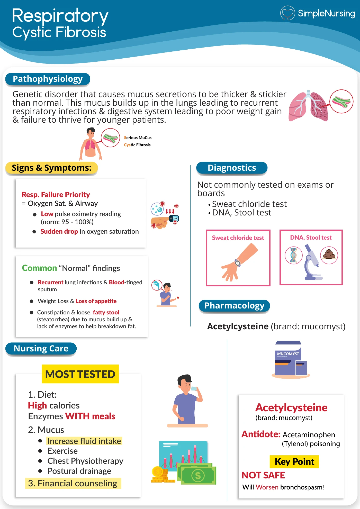

🫁 Respiratory · NUR 235 · Module 8
Cystic fibrosis
Chronic cough, recurrent chest infections, poor growth and bulky greasy stools. Nutrition: support growth with calories, protein and fat; give prescribed enzymes with meals and snacks.

🍽️ CF diet: feed growth and replace missing enzymes
- High-calorie, high-protein meals: the usual course teaching for a child with malabsorption or poor growth. Include nutrient-dense fats; do not routinely prescribe a low-protein, low-fat diet.
- Carbohydrates supply energy: include foods such as rice, bread, potatoes and fruit alongside protein and fat.
- Pancreatic enzymes: when prescribed for pancreatic insufficiency, give at the start of meals and snacks. Do not crush or chew the enzyme beads.
- Fat-soluble vitamins A, D, E and K: use the prescribed CF formulation. Remember “ADEK rides with FAT.” Extra B-complex foods are not the distinctive vitamin-replacement priority tested here.
- Salt and fluids: follow the CF team's plan, especially with heat, sweating or illness.
Why: thick secretions can block pancreatic enzymes from reaching the intestine. Poor digestion and absorption can cause greasy stools and poor growth. Extra energy supports growth; enzyme replacement helps the child use the food.
Your question: the high-calorie and meals/snacks enzyme choices fit. “Low protein and fat” points in the wrong direction. Carbohydrates contribute energy, but they do not replace the need for protein and fat.
Clinical side note: the CF dietitian individualizes energy intake, particularly with CFTR modulators, diabetes or excess weight gain. The plan is not unrestricted calories for every person with CF.
Cystic Fibrosis Foundation: young-child nutrition ↗ Enzymes with meals and snacks ↗ Individual nutrition needs ↗
Study notes
Increased breathing effort, hemoptysis or significant dehydration needs review.
⚙ Pathophysiology
- Inherited CFTR dysfunction produces thick secretions and salty sweat.
🩺 Nursing actions
- Assess airway clearance, infection, growth and stool pattern.
- Coordinate nutrition, glucose monitoring and the daily therapy plan.
💊 Treatment
- Airway clearance, prescribed inhaled drugs/antibiotics and eligible CFTR modulators.
- Pancreatic enzymes with meals/snacks when pancreatic insufficient.
🏠 Patient & family education
- Do not crush enzyme beads; follow the feeding plan.
- Use prescribed vitamins, salt and hydration; follow infection precautions.
🗝 Visual mnemonic key
STICKY LUNGS + BLOCKED PANCREAS + SALTY SWEAT. The enzyme key opens the food box at every meal and snack. ADEK vitamins ride with FAT on the avocado cart.
The cartoon objects are memory symbols. The labeled anatomy beside them is the medical illustration.
Original Simple Nursing handout
The matching cystic fibrosis handout is shown unchanged beside this topic.

Where this fits in the course
Based on the supplied course maps and case-study topics. This concise visual companion adds original illustrations and memory aids; the original teaching files remain available.
Supplemental references for this system
Illustrations show typical features, not every possible presentation. Medication and procedure decisions follow the individual clinical plan. Original mnemonics are not affiliated with Picmonic.